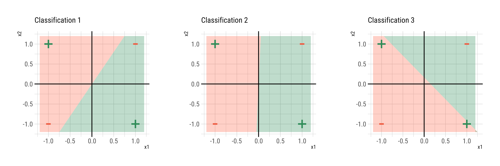
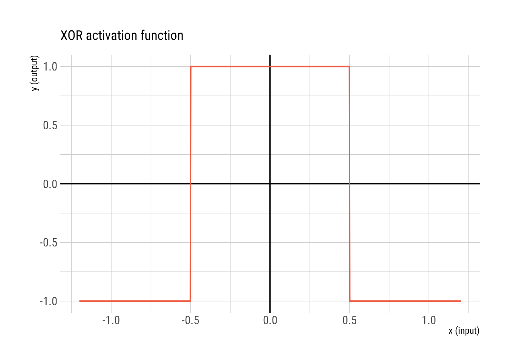
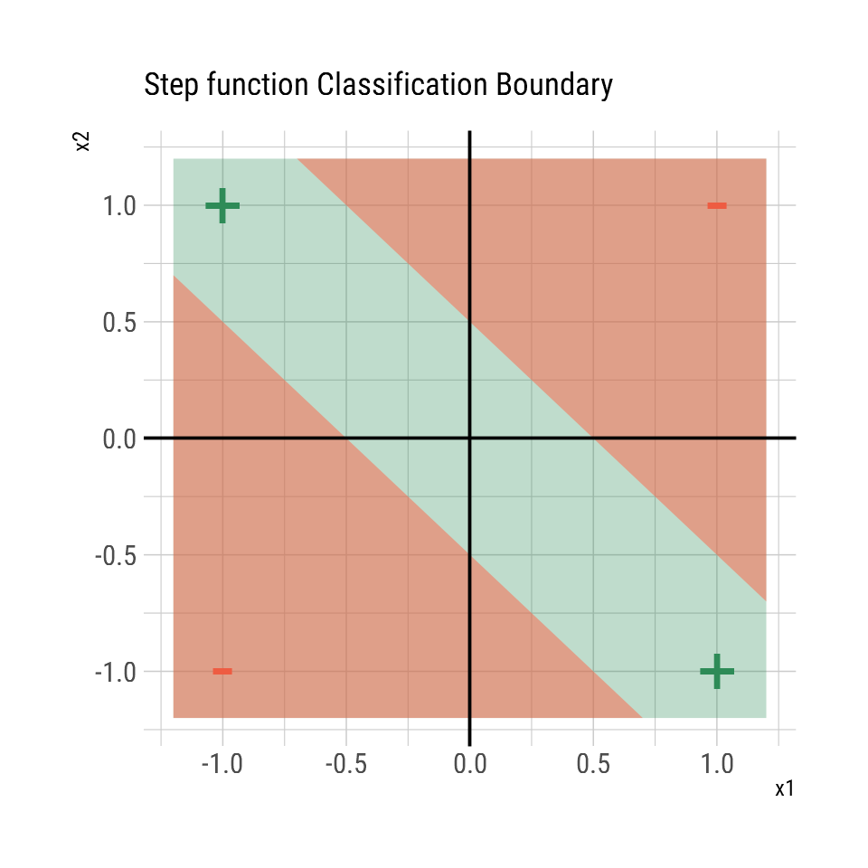
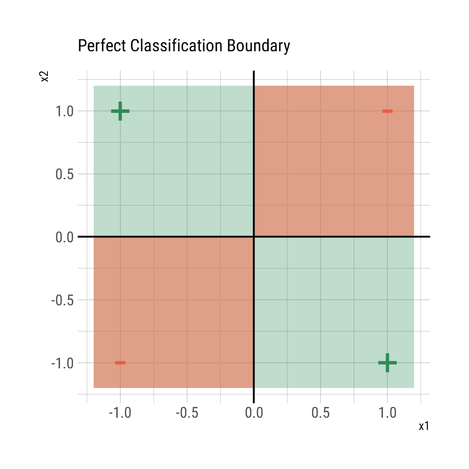
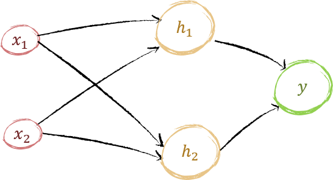
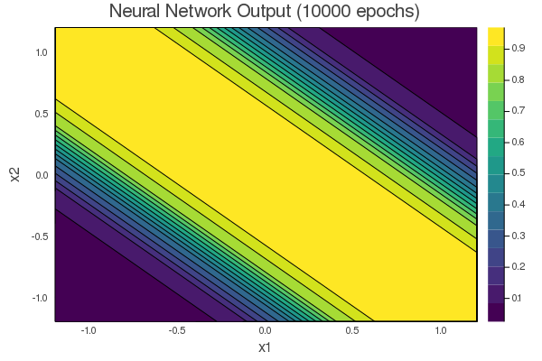

Chapter 3 Learning non-linear functions
We have seen from the previous chapter that a single neuron can be equipped to handle any generalized linear function by using the corresponding activation function. However, how about non linear functions? A standard non linear function that appears in many scenarios is the XOR or the exclusive or function.
3.1 Learning the XOR function
The XOR function looks like this
| x1 | x2 | y |
|---|---|---|
| +1 | +1 | -1 |
| +1 | -1 | +1 |
| -1 | +1 | +1 |
| -1 | -1 | -1 |
No linear classifier can fit this data

Can we use a single neuron to learn this data?
Remember the general form of the model in a neuron is \[ y = \phi(w_0+w_1x_1+w_2x_2+\ldots+w_kx_k) \]
so we could just use a non linear activation function \(\phi\) to get the XOR function. There may be several activation functions that work. One example is

If we use the above function as the activation function for a single neuron, the classification boundaries would look as follows;

We were able to come up with this activation function because we exactly knew the output for every input. However, this will not be the case for other data sets. The thing we are trying to do is for the same neural network to do all possible tasks with the same activation function. We should be able to use more neurons with a universal activation function to classify this data.
The perfect(in what sense? common sense?) classification boundary for this XOR problem would be:

To achieve this classification boundary the activation function needs to be:
… I cannot think of a way a single neuron can get this output using any activation function. The input to the activation function is a single value which is a linear combination of the inputs \(w_0+w_1x_1+w_2x_2\). However we transform this single value any mapping \(x\rightarrow \phi(x)\) would not produce the classification boundaries above. This is because … any value of \(w_0+w_1x_1+w_2x_2\) maps to two values depending on the values of \(x_1\) and \(x_2\), which would not be a valid function,
So…, why cant a neuron learn this function? The issue is the linear combination of all the inputs in the neuron \(\sum_iw_ix_i\), which maps the inputs to a linear space where they cannot be separated.
Could a way to solve this problem with a single neuron, be to map to a linear combination of transformed inputs \(\sum_iw_if(x_i)\)(No this will not work too be cause we need a multiplication/interaction term with \(x_1\) and \(x_2\) which is impossible to get with a linear combination).
We do not want to use the multiplication operation in a neuron as there will be \(p!\) ways to handle \(p\) inputs, which will greatly complicate a neuron (we want to keep it as simple as possible and build using complex structures using simple structures.)
so the next question is… Which activation function can model any dataset. We have seen that linear activation function no matter what cannot create no linear classification boundaries so it is out of the question. It have to be something non linear.
3.2 The Universal Approximation Theorem
The universal approximation theorem states that, an artificial neural network with a single hidden layer can approximate any function \(f\) in \(\mathbb{R}^n\) to any desired degree of precision. A nice intuitive explanation, on how the universal approximation theorem works, is presented in Michael Nielsen’s book.
- Not all activation functions may guarantee the approximation (e.g.linear activation functions cannot generate a nonlinear function), but most non-linear functions work.
- The neural network can only approximate continuous functions.
Mathematically any function can be approximated using:
\[\hat{f}(x)= \sum_{i = 1}^N \nu_i \phi(w_i^Tx)\] where, \(\nu_i\) are the output weights and \(w_i\) are the weights for each of the N neurons in the hidden layer.
and the universal approximation theorem guarantees that for any \(\epsilon\) we can find a \(\hat{f}\) depending on \(N\)
\[|f(x)-\hat{f}(x)|<\epsilon\]
We will look at one simple example on how the universal approximation theorem works, by solving the XOR problem using a multiple neurons.
3.3 Solving XOR problem a neural network instead of a single neuron
Some notation for representing neural networks.
The input layer does nothing it is just the inputs no neurons there. Then the second layer is where the first layer of neurons gather all the inputs and transform them to another representation. If there is only one neuron the output neuron is not needed. However if there are multiple neurons in the first layer an output neuron is needed to combine all the neuron outputs from the first layer, and produce the output in the required format based on the activation function.

The above figure represents a neural network with 2 neuron in its hidden layer \(h_1\) and \(h_2\) and one output neuron \(y\).
Let us derive the final functional form of the output.
\[ y = \phi_y(\nu_0 +\nu_1 h_1 +\nu_2 h_2)\] \[ h_1 = \phi_{h_1}(w_{10}+w_{11}x_1+w_{12}x_2)\] \[ h_2 = \phi_{h_2}(w_{20}+w_{21}x_1+w_{22}x_2)\]
So, \[ y = \phi_y(\nu_0 +\nu_1 \phi_{h_1}(w_{10}+w_{11}x_1+w_{12}x_2) +\nu_2 \phi_{h_2}(w_{20}+w_{21}x_1+w_{22}x_2))\]
Let us assume that all the activation functions are sigmoid functions.
\[ \phi = \frac{1}{1+e^{-x}} \] Then we can write the full functional form as:
\[ y = f(x_1,x_2) = \frac{1}{1+e^{ -(\nu_0 +\nu_1 \frac{1}{1+e^{-(w_{10}+w_{11}x_1+w_{12}x_2)}} +\nu_2 \frac{1}{1+e^{-(w_{20}+w_{21}x_1+w_{22}x_2)}} )}}\]
Similar to when we trained the single neuron, the neuron has to learn more weights now \(\nu_{0,1,2},w_{10,11,12,20,21,22}\). We have to get the gradients with respect to the weights similar to what we did earlier.
So….. what should we do
Compute gradients by hand manually and code it. (Time consuming and impossibly complicated as our neural network increases in size)
There are algorithms to compute gradients numerically using automatic methods for any arbitrary function f. (Just needs computational power)
This is where we need some programming
to calculate the gradients automatically. Take a detour to understand Automatic Differentiation and come back here after understanding.
Let us write the function to get the gradient of the above neural network function.
using Zygote
# Define the function
nnfun(θ, x) = 1/(1+exp( -(θ.v[1] +θ.v[2]* 1/(1+exp(-(θ.w[1,1] +θ.w[1,2]*x[1]+θ.w[1,3]*x[2])))+θ.v[3]*1/(1+exp(-(θ.w[2,1]+θ.w[2,2]*x[1]+θ.w[2,3]*x[2]))))))## nnfun (generic function with 1 method)## (v = [0.22158, 0.44004, 0.5872], w = [0.552103 0.974364 0.439959; 0.548627 0.550641 0.691859])Now we can proceed to train this model using Gradient descent to find good weights for the neural network.
The gradient descent function is as follows
using Zygote
# Generate data
function dataxor(;n=4)
x = [-1.0 -1.0; -1.0 1.0; 1.0 -1.0;1.0 1.0];
y = [0.0, 1.0, 1.0, 0.0];
return (x,y)
end;
X,Y = dataxor();
# neural network loss function
nnfun(θ, x,y) = (y - 1/(1+exp( -(θ[1][1] +θ[1][2]* 1/(1+exp(-(θ[2][1,1] +θ[2][1,2]*x[1]+θ[2][1,3]*x[2])))+θ[1][3]*1/(1+exp(-(θ[2][2,1]+θ[2][2,2]*x[1]+θ[2][2,3]*x[2])))))))^2;
# Perform gradient descent
function gradient_descent_nn(;Y::Array{Float64,1},X::Array{Float64,2}, α::Float64 = 0.01, epochs::Int64 = 100)
n,p = (size(X,1), size(X,2)); # get n and p from X
θ = (rand(p+1), rand(2,p+1)); # initialize θ: the weights vector
for i in 1:epochs # iterate set number of epochs for the weights to converge
δθ = (zeros(p+1), zeros(2,p+1));
for j in 1:n
δθ = δθ .+ gradient(θ -> nnfun(θ,X[j,:],Y[j]), θ)[1]; # Compute gradient for each input
end
δθ = δθ./n;
θ = θ .- α.*δθ; # update θ
# println(nnfun(θ,X[1,:],Y[1])+nnfun(θ,X[2,:],Y[2])+nnfun(θ,X[3,:],Y[3])+nnfun(θ,X[4,:],Y[4]))
end
return θ;
end;
# train the neural netowork
nepochs = 1000;
#θ = gradient_descent_nn(Y = Y, X = X, α = 0.35, epochs = nepochs);This is the final output function the neural network has trained to output based on the input data. 
So, why is it that the neural network trained to get this function. Why did it not fit a more complex surface.
Are there any limitations to complexity?
Yes, the neural network can only generate a surface of this complexity based on the network architecture with 2 hidden neurons. As we learned in the universal approximation thoerem, Any function can be approximated if we use more neurons. So let us use more neurons and see how the surface complexity changes.
This is important because this is how you would determine the number of neurons in your neural network.
Trying out 3,4,5 hidden neurons.
The results seem similar and getting the same solutions even for higher number of neurons. This may be because of the limited data with only 4 data points.
Ok, So what do I want to understand /do next?